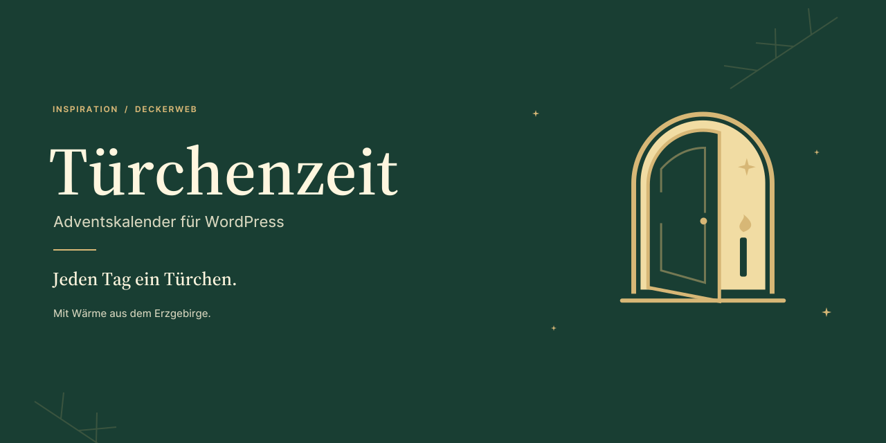
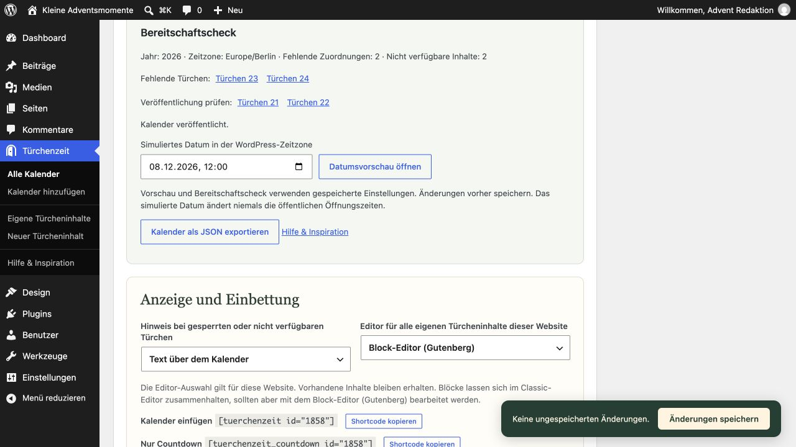
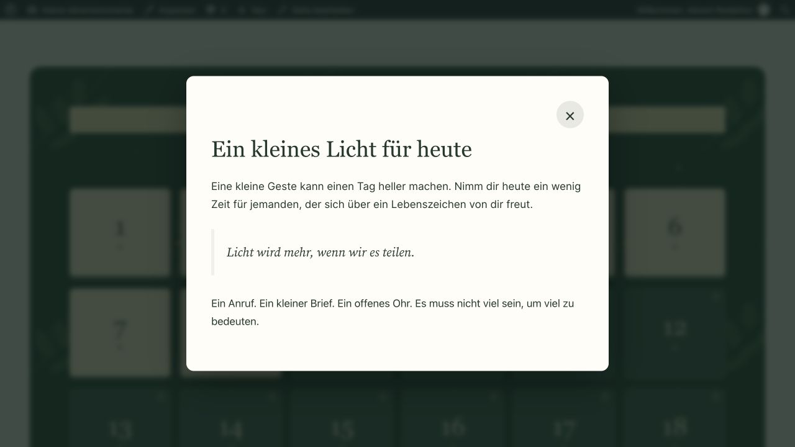
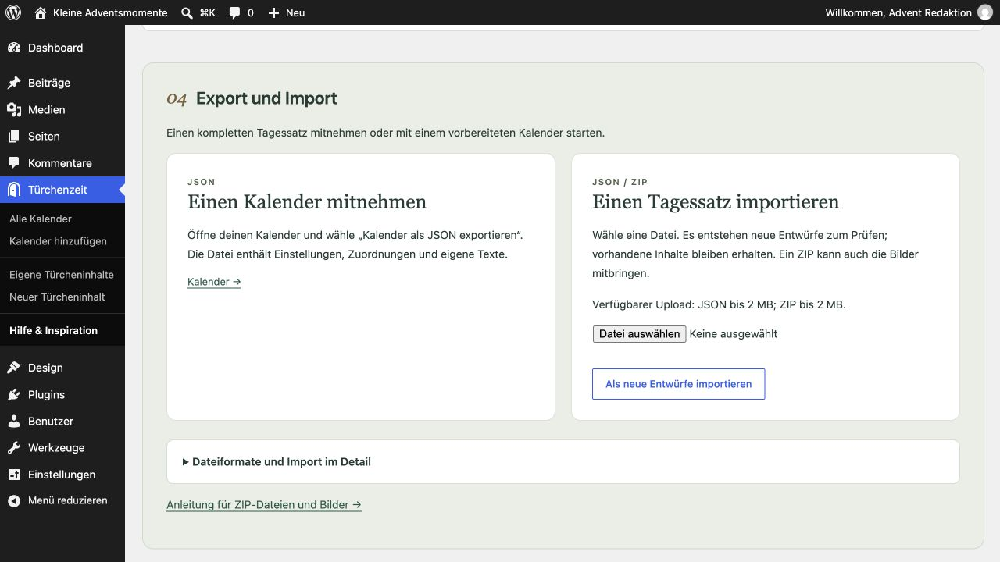
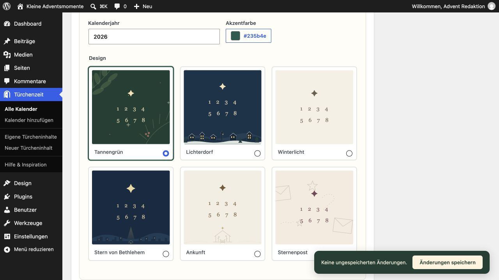
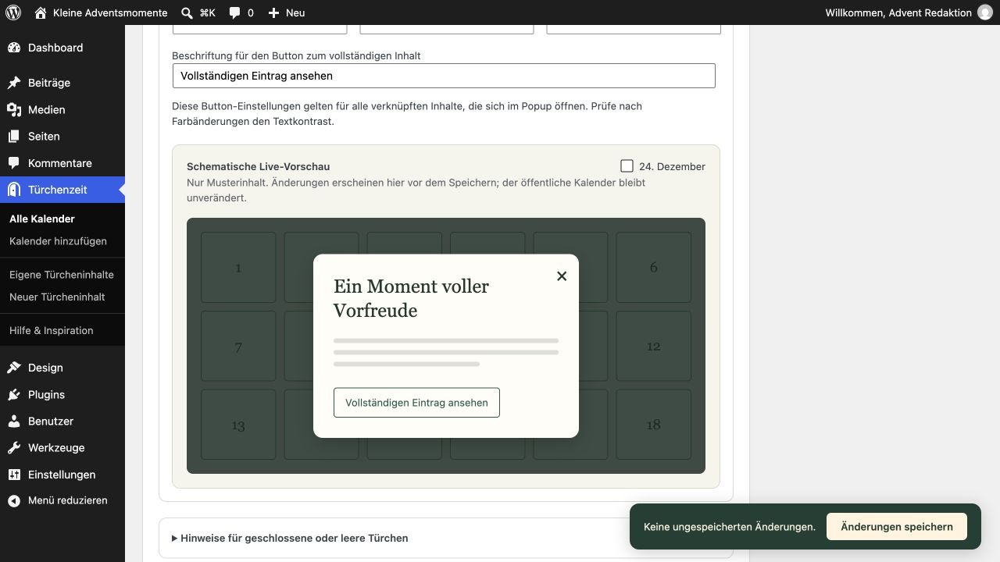

Türchenzeit
Türchenzeit bringt 24 kleine Adventsmomente auf deine WordPress-Website. Kombiniere eigene Türcheninhalte mit vorhandenen Beiträgen oder Seiten, wähle ein passendes Design und lass jeden Tag ein neues Türchen öffnen. Auf Wunsch entsteht daraus eine vollständig bearbeitbare Adventswebsite – einmal eingerichtet, jedes Jahr mit neuen Inhalten. Ein Projekt aus der Serie Inspiration, mit Wärme aus dem Erzgebirge.
Wofür Türchenzeit steht
Türchenzeit möchte Raum für Vorfreude schaffen – mit Inhalten, die Freude bereiten, zum Nachdenken einladen und Herz und Seele ansprechen. Die Gestaltung ist bewusst warm und zurückhaltend. Kitsch gehört ebenso wenig zum Konzept wie Halloween; auch eine reine Winter- oder Schneekulisse ist nicht die Idee hinter dem Plugin. Sein Zuhause ist die Advents- und Weihnachtszeit.
Natürlich dürfen hinter den Türchen auch Gutscheine, Angebote oder Produktideen stehen. Türchenzeit ist jedoch kein auf Verkauf und schnelle Aufmerksamkeit ausgerichtetes Marketing-Plugin. Es bietet ein sorgfältig gestaltetes Werkzeug; die persönliche Note entsteht durch das, was du damit teilst. Ein guter Adventskalender braucht keine lauten Effekte – sondern etwas, auf das sich Menschen jeden Tag freuen können.
Auf einen Blick
- Deine eigene Adventswebsite – bearbeitbare Landingpage mit optionalen Header- und Footer-Vorlagen.
- 24 Türchen, deine Inhalte – eigene Tagesinhalte und bestehende Beiträge oder Seiten kombinieren.
- Sechs Designs mit Charakter – individuelle Akzentfarben und anpassbare Popups.
- Jeden Tag ein neuer Moment – zeitgesteuerte Freigabe und optionaler Dezember-Countdown.
- Einmal gestalten, jedes Jahr nutzen – neue Jahresausgaben über die bestehende Adresse bereitstellen.
- Mit Überblick vorbereiten – Türchenraster, Bereitschaftscheck und private Datumsvorschau.
- Komplette Tagessätze übernehmen – JSON-/ZIP-Import samt Bildern.
Erste Schritte
- Lade das Plugin-ZIP unter Plugins → Plugin hinzufügen → Plugin hochladen hoch und aktiviere es.
- Erstelle deine Inhalte unter Türchenzeit → Neuer Türcheninhalt. Der Block-Editor (Gutenberg) ist Standard, solange keine Editor-Auswahl gespeichert wurde. Wenn du möchtest, wähle Classic in den Kalendereinstellungen; die gespeicherte Auswahl gilt für diese Website.
- Lege unter Türchenzeit → Kalender hinzufügen einen Kalender an. Wähle Titel, Jahr, Design und optional den Countdown-Text.
- Wähle eine Türchenkarte und suche nach einem Titel. Klicke direkt unter dem Suchfeld auf einen Treffer oder erstelle einen eigenen Entwurf und weise ihn zu. Veröffentliche eigene Inhalte, sobald sie fertig sind; verknüpfte Einträge müssen bereits veröffentlicht sein. Speichere den Kalender.
- Veröffentliche den Kalender. Verwende seinen Shortcode oder klicke auf Landingpage vorbereiten. Die neue Seite startet als Entwurf aus nativen Blöcken. Passe Texte, Logo, Kontakt- und rechtliche Links an und veröffentliche die Seite.
Tipps für deine Adventswebsite
Die vorbereitete Landingseite ist eine normale WordPress-Seite. Du kannst sie im Block-Editor (Gutenberg) bearbeiten und unter Einstellungen → Lesen als statische Startseite deiner Website festlegen.
Für eine kleine Adventswebsite genügt oft schon diese eine Seite, ergänzt um Impressum und Datenschutz. Wenn du die Tagesinhalte unter „Eigene Türcheninhalte“ anlegst, brauchst du dafür keine zusätzlichen Blogbeiträge oder Inhaltsseiten. So bleibt die Website schlank und übersichtlich.
Header und Footer sind optional. Die mitgelieferten Vorlagen bieten einen fertigen Ausgangspunkt, den du mit eigenen Farben, Texten und einem Logo gestalten kannst. Bei Bedarf lässt sich im Header auch eine Navigation ergänzen – beispielsweise zu weiteren Informationen oder Kontaktmöglichkeiten.
Ein Netzwerk, viele Adventswebsites
Mit einer netzwerkweiten Aktivierung kannst du eigenständige Adventswebsites zu verschiedenen Themen betreiben: etwa Rezepte, Musik, Andachten oder ein Projekt vor Ort. Jede Website behält ihre eigenen Kalender, Inhalte, Landingseiten, Einstellungen und ihre WordPress-Zeitzone. Türchenzeit steht auch später hinzugefügten Websites zur Verfügung. Berechtigte Administratoren richten jede Website separat ein; die Netzwerkaktivierung legt keine Seiten oder Kalender automatisch an.
Häufige Fragen
Wie füge ich den Kalender ein?
Verwende [tuerchenzeit id="123"] und ersetze 123 durch die im Editor angezeigte Kalender-ID. [adventskalender id="123"] ist eine alternative Schreibweise. JavaScript ist zum Öffnen der Türchen und für den Countdown erforderlich.
Kann der Countdown separat stehen?
Verwende [tuerchenzeit_countdown id="123"]. Mit countdown="0" im Kalender-Shortcode blendest du dessen eigenen Countdown aus. Das Ziel ist der 1. Dezember um 00:00 Uhr im Kalenderjahr und in der WordPress-Zeitzone.
Wie prüfe ich zukünftige Türchen?
Der Bereitschaftscheck zeigt fehlende Zuordnungen, nicht verfügbare Inhalte, Jahr und Zeitzone. Ein gespeicherter Kalender bietet eine private Datumsvorschau in der WordPress-Zeitzone. Nur berechtigte Administratoren können sie aufrufen; Besucheröffnungszeiten bleiben unverändert. Alternativ öffnet [tuerchenzeit id="123" preview="1"] alle zugewiesenen Inhalte einschließlich eigener Entwürfe.

Der Bereitschaftscheck unterscheidet fehlende Zuordnungen und unveröffentlichte Inhalte; darunter öffnet sich die private Datumsvorschau.Sind zukünftige Inhalte geschützt?
Eigene Türcheninhalte sind von der normalen WordPress-Suche ausgeschlossen und haben keine öffentlich aufrufbare Einzelansicht. Besucher sehen sie über ein geöffnetes Kalendertürchen; REST-Zugriffe sind auf Administratoren beschränkt. Verknüpfte Beiträge und Seiten bleiben normalerweise öffentlich erreichbar und auffindbar. Die Zusatzoption schützt sie in veröffentlichten Kalendern bis zum Öffnungstermin, auch über direkte URLs, die normale WordPress-Suche und weitere Standardzugriffswege von WordPress. Bei Mehrfachzuweisungen gilt der früheste Termin aller schützenden Kalender; Entwürfe sperren nichts. Nach Entfernen der letzten schützenden Zuordnung entfällt die Sperre. Vor Einschalten Caches leeren und betroffene Original-URLs vom Seiten-Cache ausnehmen. Schutz setzt ein aktives Plugin voraus und umfasst keine öffentlichen Mediendateien oder externen Kopien.
Was passiert nach Weihnachten oder bei fehlenden Inhalten?
Geöffnete Türchen bleiben zugänglich. Optional erscheint ab dem 25. Dezember ein bearbeitbarer Weihnachtsgruß. Der Tagesbutton erscheint nur vom 1. bis 24. Dezember im Kalenderjahr. Gelöschte, private, passwortgeschützte oder unveröffentlichte verknüpfte Einträge sind nicht verfügbar. Besuchsmarkierungen sind freiwillig, lokal je Browser und werden erst nach Einschalten gespeichert.
Welche Inhalte und Daten werden unterstützt?
Wähle Classic oder Block-Editor (Gutenberg) für eigene Inhalte. Standardblöcke für Text, Bilder, Galerien, Spalten und Videos werden im Dialog dargestellt. YouTube-URLs in einem eigenen Absatz und YouTube-Einbetten-Blöcke werden zu Playern, die erst per Klick laden. Beliebige fremde Iframes sind nicht erlaubt. Verknüpfte Vorschauen zeigen Auszug und Link. Deaktivierung und Deinstallation erhalten Kalender, Inhalte, Seiten, Editor-Auswahl und Zuordnungen. Daily Scripture unterstützt feste lokale Bibelstellen als „Bibelstelle“-Block und [daily_scripture_passage ...], wenn Plugin und gewünschte Bibelausgabe eingerichtet sind. Andere Shortcodes werden nicht ausgeführt.

Eigener Türcheninhalt in der privaten Datumsvorschau für den 8. Dezember; die öffentlichen Öffnungszeiten bleiben unverändert.Wie bereite ich das nächste Jahr vor, ohne die laufende Website zu verändern?
Verwende im gespeicherten Kalender Nächste Jahresausgabe vorbereiten. Es entstehen ein Kalenderentwurf für das nächste Jahr und unabhängige Entwürfe seiner eigenen Inhalte; verknüpfte Einträge werden wiederverwendet. Veröffentliche neue Inhalte und Kalender, sobald sie fertig sind. Stelle im ursprünglichen Kalender den Wechseltermin in der WordPress-Zeitzone ein (Standard: 1. November des nächsten Jahres). Der ursprüngliche Shortcode und die Landingpage-Adresse zeigen dann die neue veröffentlichte Ausgabe. Entwürfe ersetzen den laufenden Kalender nie; ein leeres Wechseldatum deaktiviert die Umschaltung. Unter „Popup und Button gestalten“ lassen sich Farben, Overlay-Deckkraft, Button-Text, Umriss/Füllung und Ecken ändern. Leere Farbfelder übernehmen das Design. „Hinweise für geschlossene oder leere Türchen“ bietet getrennte Texte mit {tuerchen}, {tag}, {datum} und {uhrzeit}; Absätze, Fett und Kursiv sind erlaubt. Im Seiteneditor unter Vorlagen → Türchenzeit lassen sich optional Header oder Footer einfügen und bestehende Bereiche ersetzen. Die äußere Gruppe muss auf „Volle Breite“ stehen; die bisherige Landingseite bleibt Standard.
Wie übertrage ich einen Kalender?
Im Kalendereditor als JSON exportieren (höchstens 2 MB). Unter Hilfe & Inspiration JSON oder ein ZIP (höchstens 20 MB) mit calendar.json und Rasterbildern in media/ importieren. ZIP-Bilder werden in die Mediathek übernommen; passende Inhalts-URLs, Beitragsbilder und Türchenbilder werden angepasst. Es entstehen neue Kalender- und Inhaltsentwürfe. Lokale Original-URLs werden wieder zugeordnet; fehlende Verknüpfungen bleiben leer. Andere eingebettete URLs bleiben bestehen. Der Originalschutz startet aus; Jahreswechsel-Verknüpfungen werden nicht importiert. ZIP erfordert die PHP-ZIP-Erweiterung. SVG wird nicht unterstützt.

Export sichert JSON. Import erzeugt neue Entwürfe; das Beispiel zeigt die tatsächlich verfügbare Uploadgrenze dieser Testumgebung.Wie gestalte ich eigene Türchen?
Unter Vorlagen → Türchenzeit stehen Tagesimpuls, Bibelvers mit Gedanken, Video- und Bildgeschichte sowie optionale Header und Footer bereit. Die zusätzliche Palette erhält Theme-Farben und ergänzt Design- und Akzentfarben. Eigene Türchenbilder erscheinen erst nach Freigabe. Eine einmalig gemischte Nummernfolge bleibt stabil; Animationen sind abschaltbar und respektieren reduzierte Bewegung.

Die Designauswahl mit Jahr und Akzentfarbe; Tannengrün ist ausgewählt.Was muss ich bei Caches beachten?
Kalenderanfragen an admin-ajax.php nicht zwischenspeichern. Beim Einschalten des Originalschutzes vorhandene Seiten-/CDN-/REST-Caches leeren und Original-URLs vom vollständigen Seiten-Cache ausnehmen. Antworten vor dem WordPress-Aufruf, Suchindizes fremder Dienste und öffentliche Medien benötigen eigene Schutzmaßnahmen. Ein konkreter Cache-/CDN-Anbieter wird damit nicht als geprüft bestätigt.
Datenschutz und Verbindungen
Kalenderanfragen im Frontend gehen nur an die eigene WordPress-Website. Keine Telemetrie oder externen Schriften. YouTube-Player kontaktieren youtube-nocookie.com erst nach dem Klick auf YouTube-Video laden; externe Vorschaubilder werden nicht geladen. Nach dem Laden erhält YouTube trotzdem Verbindungsdaten des Besuchers. Beim Bearbeiten kann der Block-Editor (Gutenberg) die WordPress-Vorschau des Anbieters verwenden. Die eingebettete deckerweb Library bietet einen optionalen, anfangs lokalen Plugin-Katalog. Der deckerweb Updater prüft GitHub-Releases über den WordPress-Updateablauf. Andere Medien behalten ihre ursprünglichen Anbieter. Besuchsmarkierungen verwenden optional localStorage, erst nach bewusster Aktivierung durch den Besucher. Gespeichert werden nur Türchennummern je Website, Kalender und Jahresausgabe; nichts wird übertragen. Abschalten löscht den gespeicherten Zustand, ein zusätzlicher Button löscht die Markierungen. Daily Scripture bleibt freiwillig; Türchenzeit lädt dafür keine Texte aus dem Netz.
Shortcodes: Popup oder vollständige Seite?
Im Kalender-Popup
Eigene Türcheninhalte und Kalender-Popups führen keine allgemeinen Shortcodes aus. Daily Scripture ist eine unterstützte Ausnahme: Der Shortcode für eine feste Bibelstelle zeigt einen Vers oder längeren Abschnitt, wenn Plugin und Bibelausgabe verfügbar sind.
Auf der vollständigen Beitragsseite
Für weitere Shortcodes einen Beitrag, eine Seite oder einen geeigneten öffentlichen Inhaltstyp zuweisen und „Zum Eintrag wechseln“ wählen. Die vollständige Seite verwendet die normale WordPress-Ausgabe, sofern das zuständige Plugin und Template diese Shortcodes unterstützen. Ein anderer Inhaltstyp allein ändert die Popup-Regeln nicht.
Das Popup ist für überschaubare Tagesinhalte gedacht. Andere Shortcodes können vollständige Layouts, Formulare, Skripte oder Styles benötigen, deren Funktion sich im nachgeladenen Popup nicht allgemein gewährleisten lässt. Daily Scripture ist eine gezielt integrierte Ausnahme.
Die Wärme hinter Türchenzeit
Türchenzeit ist ein kleines Herzensprojekt von David Decker, der aus dem Erzgebirge stammt. Die Region wird liebevoll Weihnachtsland genannt: Lichter in den Fenstern, hölzerne Schwibbögen und kunstvolles Handwerk prägen dort die Adventszeit. Diese Wärme soll auch im Plugin spürbar werden – ruhig, einladend und mit Freude an den kleinen Dingen.
Was bedeutet „Türchenzeit“?
Türchenzeit verbindet die kleinen Türen eines Adventskalenders mit der besonderen Zeit vor Weihnachten. Der Name steht für Vorfreude und einen neuen kleinen Moment an jedem Tag. Der Kalender zählt die Tage vom 1. bis zum 24. Dezember.
Was ist das Erzgebirge?
Das Erzgebirge ist eine Mittelgebirgsregion im Südosten Deutschlands an der Grenze zu Tschechien. Seine Weihnachtstraditionen und das Holzkunsthandwerk inspirieren die warme Gestaltung von Türchenzeit. Der Name und die Gestaltung haben hier eine persönliche Heimat.
Kann ich einen christlichen Adventskalender gestalten?
Ja. Advent heißt Ankunft. Für Christen ist es die Zeit der Erwartung und Vorbereitung auf Weihnachten, das Fest der Geburt Jesu Christi, des Retters. Die Designs Stern von Bethlehem und Ankunft greifen diese Bedeutung auf. Du kannst Bibelverse, Andachten und andere Impulse einsetzen – oder mit den weiteren Designs einen Kalender zu einem eigenen Thema gestalten.
Muss mein Kalender einen Erzgebirgs- oder Weihnachtslook haben?
Nein. Die Herkunft prägt die Atmosphäre der mitgelieferten Designs. Deine Inhalte, Farben und Seitenvorlagen gestaltest du selbst. Der Kalender kann auf einer bestehenden Website stehen oder eine eigene Adventswebsite bilden.
Der Daily-Scripture-Button öffnet den Katalog der deckerweb Library, wenn das Plugin noch nicht installiert ist. Ist es installiert, aber inaktiv, bietet der Button die WordPress-Aktivierung an. Sobald es aktiv ist, öffnet er den Adminbereich von Daily Scripture. Verfügbare Aktionen hängen von deinen Berechtigungen ab; es wird nichts automatisch installiert.
Source Serif 4 / Inter · SIL Open Font License 1.1 · Source Serif 4 · Inter
Multisite
Kann ich Türchenzeit in Multisite netzwerkweit aktivieren?
Ja. Die Netzwerkaktivierung stellt Türchenzeit auf allen Websites des Netzwerks bereit, auch auf später hinzugefügten Websites. Jede Website verwaltet eigene Kalender, Türcheninhalte, Landingseiten, die Editor-Auswahl und ihre WordPress-Zeitzone. Berechtigte Administratoren richten sie im Dashboard der jeweiligen Website ein. Die Netzwerkaktivierung legt keine Kalender oder Seiten automatisch an. So lassen sich eigenständige Adventswebsites zu verschiedenen Themen betreiben.
Optionale lokale Schriften
Wähle in eigenen Türcheninhalten oder auf einer eigenständigen Advents-Landingseite einen Textblock aus und öffne Typografie → Schrift (Schriftfamilie). Dort stehen Türchenzeit · Source Serif 4 und Türchenzeit · Inter zur Wahl. Falls das Feld fehlt, blende Schrift über das Optionsmenü der Typografie ein. Mit Standard kehrst du zur geerbten Theme-Schrift zurück.
Die beiden Schriften sind optional und werden lokal unter der SIL Open Font License mitgeliefert. Eine Installation in der Schriftbibliothek oder ein externer Schriftdienst ist nicht erforderlich. Die Theme-Typografie bleibt erhalten, bis du eine Schrift auswählst. Der Browser lädt Schriftdateien erst für Text, der sie verwendet. Die Plugin-Schriften stehen zur Verfügung, solange Türchenzeit aktiv ist.
Zehn Inhaltsvorlagen bieten bearbeitbare Ausgangspunkte: Impuls, Bibelvers, Video, Bildergeschichte, Omas Rezeptbuch, eine kleine gute Tat, Adventsbrief, Lied, Kreativzeit und Abendgebet oder Segen. Alle verwenden WordPress-Standardblöcke. Ersetze Beispieltexte und leere Medienblöcke vor dem Veröffentlichen.
Kann ich Popup-Farben vor dem Speichern prüfen?
Ja. Unter „Popup und Button gestalten“ zeigt eine schematische Live-Vorschau Beispielinhalt mit den gewählten Einstellungen. Eine eigene Ansicht ist für den 24. Dezember verfügbar. Der öffentliche Kalender übernimmt die Änderungen erst beim Speichern.

Die schematische Live-Vorschau zeigt Beispielinhalt und den Button; erst Speichern übernimmt Einstellungen in den Kalender.